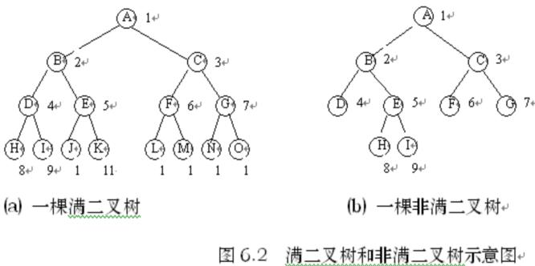
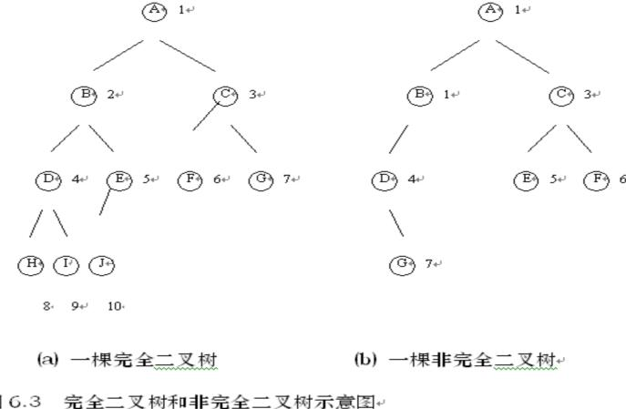
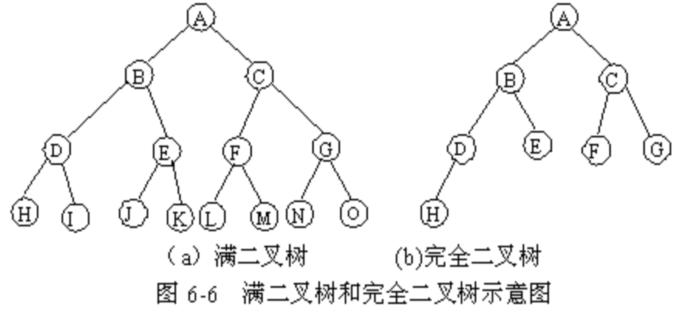
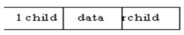
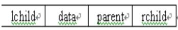
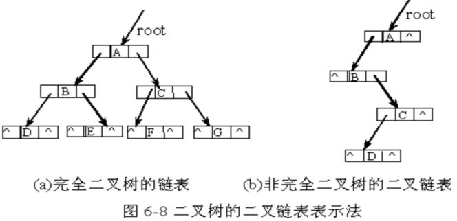

第六章 树和二叉树
§6.2 二叉树
6.2.1 二叉树的定义
1、 ▲：二叉树（BinaryTree）是个有限元素的集合，该集合或者为空、或者由一个称为根(root)的元素及两个不相交的、被分别称为左子树和右子树的二叉树组成。当集合为空时，称该二叉树为空二叉树。在二叉树中，一个元素也称作一个结点。
二叉树是有序的，即若将其左、右子树颠倒，就成为另一棵不同的二叉树。即使树中结点只有一棵子树，也要区分它是左子树还是右子树。因此二叉树具有五种基本形态 。
2、▲：二叉树的相关概念
（1）结点的度：结点所拥有的子树的个数称为该结点的度。
（2）叶结点：度为0的结点称为叶结点，或者称为终端结点。
（3）分枝结点：度不为0的结点称为分支结点，或者称为非终端结点。一棵树的结点除叶结点外，其余的都是分支结点。
（4）左孩子、右孩子、双亲：树中一个结点的子树的根结点称为这个结点的孩子。这个结点称为它孩子结点的双亲。具有同一个双亲的孩子结点互称为兄弟。
（5）路径、路径长度：。如果一棵树的一串结点n1,n2,…,nk有如下关系：结点ni是ni+1的父结点（1≤i<k）,就把n1,n2,…,nk称为一条由n1至nk的路径。这条路径的长度是k-1。
（6）祖先、子孙：在树中，如果有一条路径从结点M到结点N，那么M就称为N的祖先，而N称为M的子孙。
（7）结点的层数：规定树的根结点的层数为1，其余结点的层数等于它的双亲结点的层数加1。
（8）树的深度：树中所有结点的最大层数称为树的深度。
（9）树的度：树中各结点度的最大值称为该树的度。
（10）满二叉树：在一棵二叉树中，如果所有分支结点都存在左子树和右子树，并且所有叶子结点都在同一层上，这样的一棵二叉树称作满二叉树。

如图6.2所示，（a）图就是一棵满二叉树，（b）图则不是满二叉树，因为，虽然其所有结点要么是含有左右子树的分支结点，要么是叶子结点，但由于其叶子未在同一层上，故不是满二叉树。
（11）完全二叉树：
一棵深度为k的有n个结点的二叉树，对树中的结点按从上至下、从左到右的顺序进行编号，如果编号为i（1≤i≤n）的结点与满二叉树中编号为i的结点在二叉树中的位置相同，则这棵二叉树称为完全二叉树。完全二叉树的特点是：叶子结点只能出现在最下层和次下层，且最下层的叶子结点集中在树的左部。显然，一棵满二叉树必定是一棵完全二叉树，而完全二叉树未必是满二叉树。如图6.3所示（a）为一棵完全二叉树，（b）和图6.2（b）都不是完全二叉树。

3、▲：抽象数据类型二叉树的定义
ADT BinaryTree{ v数据对象：D
数据关系：R
基本操作：P
(1)inittree(&T)
二叉树的初始化。
(2)root(T)
求二叉树的根结点。
(3)parent(T,x)
求二叉树T中值为x的结点的双亲。
(4)lchild(T,x) v 求二叉树T中值为x的结点的左孩子。
(5) rchild(T,x) v求二叉树T中值为x的结点的右孩子。
(6) lbrother(T,x) v求二叉树T中值为x的结点的左兄弟。
(7) rbrother(T,x) v求二叉树T中值为x的结点的右兄弟。
(8) traverse(T) v遍历二叉树T
(9) createtree(&T) v建立一棵二叉树T。
(10) addlchild(&T,x,y) v在二叉树T中，将值为y的结点作为值为x的结点的左孩子插入。
(11) addrchild(&T,x,y) v在二叉树T中，将值为y的结点作为值为x的结点的右孩子插入。
(12) dellchild(&T,x) v在二叉树T中，删除值为x 的结点的左孩子。
(13) delrchild(&t,x)等 v在二叉树T中，删除值为x 的结点的右孩子。
} ADT BinaryTree
6.2.2 二叉树的性质
▲：性质1
若二叉树的层数从1开始，则二叉树的第k层结点数，最多为2k-1个（k>0）。 v可以用数学归纳法证明之。
▲：性质2 深度（高度）为k的二叉树最大结点数为2k-1（k>0）。
证明： 深度为k的二叉树，若要求结点数最多，则必须每一层的结点数都为最多，由性质1可知，最大结点数应为每一层最大结点数之和。既为 20+21+…+2k-1=2k-1。
性质3 对任意一棵二叉树，如果叶子结点个数为n0，度为2的结点个数为n2，则有n0=n2+1。
证明：设二叉树中度为1的结点个数为n1，根据二叉树的定义可知，该二叉树的结点数n=n0+n1+n2。又因为在二叉树中，度为0的结点没有孩子，度为1的结点有1 个孩子，度为2的结点有2个结孩子，故该二叉树的孩子结点数为 n0*0+n1*1+n2*2 ，而一棵二叉树中，除根结点外所有都为孩子结点，故该二叉树的结点数应为孩子结点数加1即：n=n0*0+n1*1+n2*2+1因此,有 n=n0+n1+n2=n0*0+n1*1+n2*2+1，最后得到n0=n2+1。
为继续给出二叉树的其它性质，先强调两种特殊的二叉树。
1）、满二叉树
深度为k具有2-k-1个结点的二叉树，称为满二叉树。
从上面满二叉树定义可知，必须是二叉树的每一层上的结点数都达到最大，否则就不是满二叉树。
2）、完全二叉树
如果一棵具有n个结点的深度为k的二叉树，它的每一个结点都与深度为k的满二叉树中编号为1~ n的结点一一对应，则称这棵二叉树为完全二叉树。 v从完全二叉树定义可知，结点的排列顺序遵循从上到下、从左到右的规律。所谓从上到下，表示本层结点数达到最大后，才能放入下一层。从左到右，表示同一层结点必须按从左到右排列，若左边空一个位置时不能将结点放入右边。
从满二叉树及完全二叉树定义还可以知道，满二叉树一定是一棵完全二叉树，反之完全二叉树不一定是一棵满二叉树。满二叉树的叶子结点全部在最底层，而完全二叉树的叶子结点可以分布在最下面两层。深度为4的满二叉树和完全二叉树如图6-6所示。

性质4 具有n个结点的完全二叉树的深度为|log2n」+1。
性质5 如果对一棵有n个结点的完全二叉树（其深度为|log2n）+1）的结点按层序编号（从第一层到第|log2n）+1层，每层从左到右），则对任一结点I（1≤I≤n）有：
（1）如果I=1，则结点是二叉树的根，无双亲；如果I>1，则其双亲PARENT（I）是结点i/2」；
（2）如果2i>n，则结点I无左孩子（结点I为叶子结点）；否则其左孩子LCHILD（I）是结点2i；
（3）如果2i+1>n，则结点I无右孩子，否则其右孩子RCHILD（I）是结点2i+1。
6.2.3 二叉树的存储结构
1.▲： 顺序存储结构
1）、基本思想
将一棵二叉树按完全二叉树顺序存放到一个一维数组中，用一组地址连续的存储单元依次自上而下、自左至右存储完全二叉树上的结点元素，即将完全二叉树上编号为I的结点元素存储在如上定义的一维数组中下标为I-1的分量中，若该二叉树为非完全二叉树，则必须用“0”将不存在结点元素相应位置填充，使存放的结果符合完全二叉树形状。如图6-7给出了顺序存贮形式。
2）、顺序存储表示
#define MAX_TREE_SIZE 100
typedef TelemType SqBiTree[MAX_TREE_SIZE];
SqBiTree bt;
对于一棵二叉树,若采用顺序存贮时,当它为完全二叉树时,比较方便,若为非完全二叉树,将会浪费大量存贮存贮单元。最坏的非完全二叉树是全部只有右分支,设高度为K,则需占用2K-1个存贮单元,而实际只有k个元素,实际只需k个存储单元。因此，对于非完全二叉树，宜采用下面的链式存储结构。
2．▲：链式存贮结构
1）、基本思想：
将一个结点分成三部分,一部分存放结点本身信息,另外两部分为指针,分别存放左、右孩子的地址。
结点可描述为:

利用这种结点结构所得二叉树的存储结构称为二叉链表。
或者一个结点中除包含信息外还包含分别指向左、右孩子及
父结点的指针，结点描述为：

利用这种结点结构所得二叉树的存储结构称为三叉链表。
对于图6-7所示二叉树,用二叉链表形式描述见图6-8。
对于一棵二叉树,若采用二叉链表存贮时,当二叉树为非完全二叉树时,比较方便,若为完全二叉树时,将会占用较多存贮单元(存放地址的指针)。若一棵有n个结点,采用二叉链表作存贮结构时,共有2n个指针域,其中只有n-1个指针指向左右孩子,其余n+1个指针为空,即，在含有n个结点的二叉链表中有n+1个空链域。没有发挥作用,被白白浪费掉了,(当然后面介绍的线索可利用它)。

2）二叉链表存储表示
typedef struct BiTNode{
TELemType data;
struct BiTNode lchild,rchild;
} BiTNode *BiTree
二叉树的基本操作通常有以下几种：
Initiate（bt）建立一棵空二叉树。
（2）Create（x，lbt，rbt）生成一棵以x为根结点的数据域信息，以二叉树lbt和rbt为左子树和右子树的二叉树。
（3）InsertL（bt，x，parent）将数据域信息为x的结点插入到二叉树bt中作为结点parent的左孩子结点。如果结点parent原来有左孩子结点，则将结点parent原来的左孩子结点作为结点x的左孩子结点。
（4）InsertR（bt，x，parent）将数据域信息为x的结点插入到二叉树bt中作为结点parent的右孩子结点。如果结点parent原来有右孩子结点，则将结点parent原来的右孩子结点作为结点x的右孩子结点。
（5）DeleteL（bt，parent）在二叉树bt中删除结点parent的左子树。
（6）DeleteR（bt，parent）在二叉树bt中删除结点parent的右子树。 （7）Search（bt，x）在二叉树bt中查找数据元素x。
（8）Traverse（bt）按某种方式遍历二叉树bt的全部结点。
|